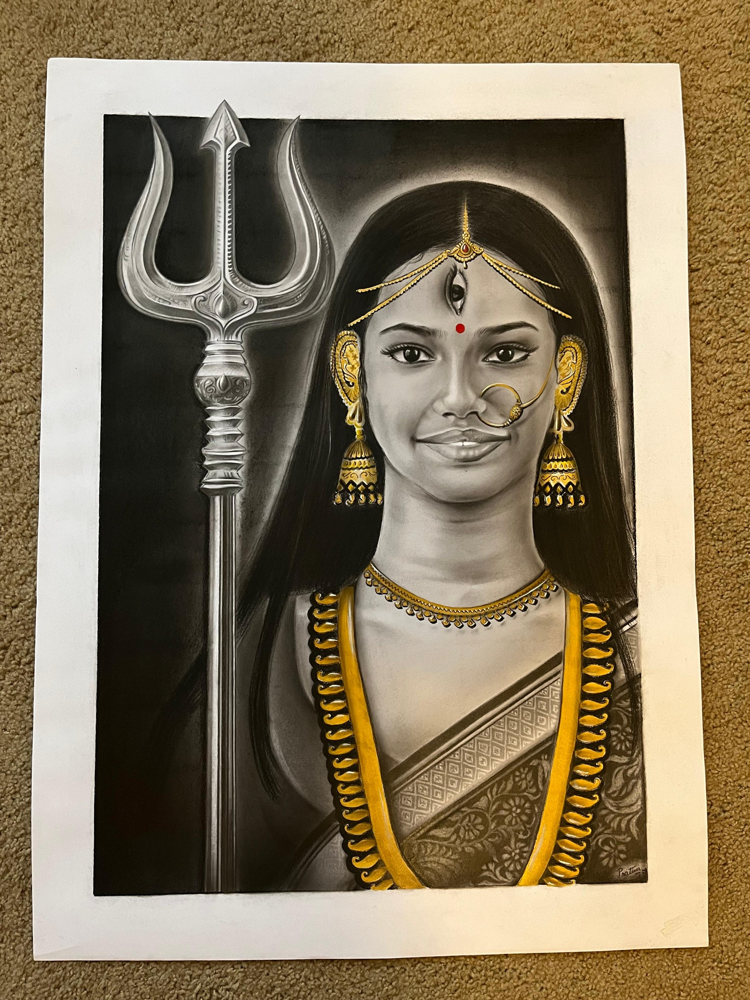
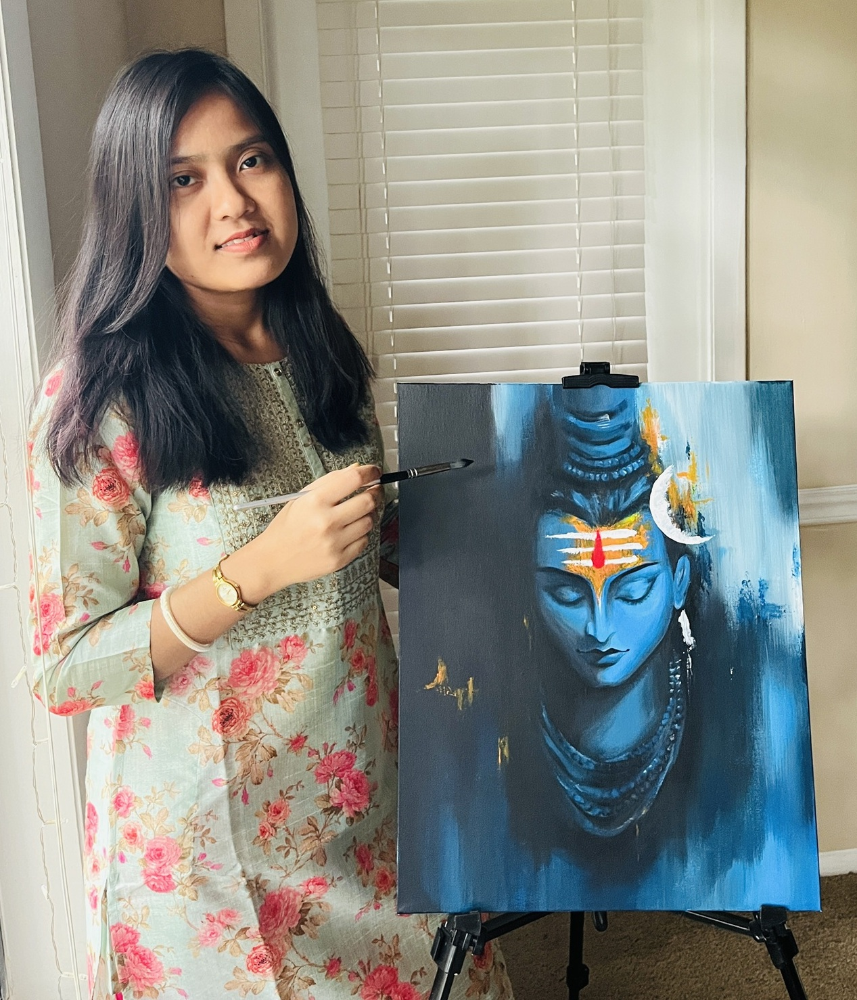
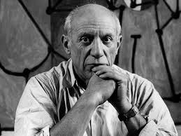
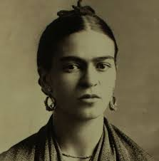

Prativa
a Bengali artist · Jacksonville · India
Art is the expression of human creativity, skill and imagination. It transcends boundaries, evokes emotion and brings to life the essence of humanity. Through painting, I capture the beauty of the world and the quiet depths of the soul — each brushstroke a story, each color a melody, each canvas a small journey.

— Prativa
Prativa Debsharma SarkarA Bengali artist, painting between two homes — Kolkata, India and Jacksonville, Florida.
Prativa's work moves quietly between watercolor, acrylic, soft pastel and graphite — a continuing conversation between her Bengali roots and her studio in the American South. Trained in the classical Indian tradition and self-led ever since, her paintings linger on devotional figures from the Hindu pantheon, small domestic moments, and the everyday landscape she keeps falling in love with.
Her illustrations have been featured in the Jagriti publication (2024 & 2025), and her work is held in private collections. She paints daily, takes commissions sparingly, and shares her process with a growing community on YouTube.
- Born
- West Bengal, India
- Based in
- Jacksonville, FL · USA
- Mediums
- Watercolor · Acrylic · Pastel · Graphite
- Featured in
- Jagriti 2024, Jagriti 2025
Inspiration from Famous Artists
“Painting is poetry that is seen rather than felt, and poetry is painting that is felt rather than seen.”
— Leonardo da Vinci

“Art washes away from the soul the dust of everyday life.”
— Pablo Picasso

“I never paint dreams or nightmares. I paint my own reality.”
— Frida Kahlo
“Creativity takes courage.”
— Henri Matisse
“The job of the artist is always to deepen the mystery.”
— Francis Bacon